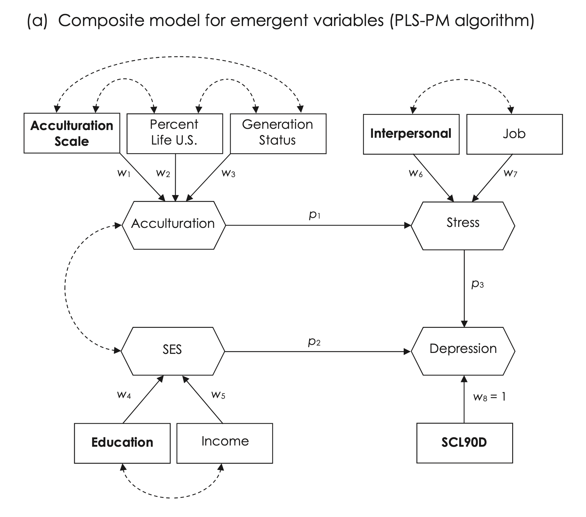

Load libraries
library(tidyverse)
library(lavaan)
library(semTools)
library(cSEM)
library(psych)Principles and Practice of Structural Equation Modeling (5e) by Rex B. Kline
library(tidyverse)
library(lavaan)
library(semTools)
library(cSEM)
library(psych)Software: cSEM

Source: Fig 16.3 (p. 295)
# set global seed for random number generation
set.seed(123)
# variable order is acculscl, status, percent, educ, income,
# interpers, job, scl90d
# read correlation matrix
shen.cor <- matrix(c(1.00, .44, .69, .21, .23, .12, .09, .03,
.44,1.00, .54, .08, .15, .08, .06, .02,
.69, .54,1.00, .16, .19, .08, .04,-.02,
.21, .08, .16,1.00, .19, .08, .01,-.07,
.23, .15, .19, .19,1.00,-.03,-.02,-.11,
.12, .08, .08, .08,-.03,1.00, .38, .37,
.09, .06, .04, .01,-.02, .38,1.00, .46,
.03, .02,-.02,-.07,-.11, .37, .46,1.00),
ncol = 8, nrow = 8)
# generate raw scores and save to dataframe
shen.data <- semTools::kd(shen.cor, 983, type="exact")
# rename columns in data frame and display correlation matrix
names(shen.data) <- c("acculscl", "status", "percent", "educ", "income",
"interpers", "job", "scl90d")
# display correlation matrix
cor(shen.data) |> print() acculscl status percent educ income interpers job scl90d
acculscl 1.00 0.44 0.69 0.21 0.23 0.12 0.09 0.03
status 0.44 1.00 0.54 0.08 0.15 0.08 0.06 0.02
percent 0.69 0.54 1.00 0.16 0.19 0.08 0.04 -0.02
educ 0.21 0.08 0.16 1.00 0.19 0.08 0.01 -0.07
income 0.23 0.15 0.19 0.19 1.00 -0.03 -0.02 -0.11
interpers 0.12 0.08 0.08 0.08 -0.03 1.00 0.38 0.37
job 0.09 0.06 0.04 0.01 -0.02 0.38 1.00 0.46
scl90d 0.03 0.02 -0.02 -0.07 -0.11 0.37 0.46 1.00# descriptive statistics
psych::describe(shen.data) |> print() vars n mean sd median trimmed mad min max range skew kurtosis
acculscl 1 983 0 1 -0.03 0.00 1.04 -3.77 3.15 6.92 0.00 0.11
status 2 983 0 1 -0.01 -0.01 1.00 -3.19 3.05 6.25 0.06 -0.05
percent 3 983 0 1 -0.04 -0.01 1.04 -3.46 3.01 6.47 0.03 -0.10
educ 4 983 0 1 0.00 0.00 1.03 -3.67 3.37 7.04 -0.01 0.01
income 5 983 0 1 0.00 0.00 1.00 -3.14 3.45 6.60 0.03 0.22
interpers 6 983 0 1 0.01 0.01 0.99 -3.57 3.11 6.68 -0.05 0.00
job 7 983 0 1 0.02 0.00 1.06 -3.23 3.15 6.38 -0.03 -0.23
scl90d 8 983 0 1 0.02 0.00 1.01 -2.73 2.98 5.71 0.05 -0.10
se
acculscl 0.03
status 0.03
percent 0.03
educ 0.03
income 0.03
interpers 0.03
job 0.03
scl90d 0.03# specify composite model
shen.model <- '
# outer model (measurement)
# exogenous composites
Acculturation <~ acculscl + status + percent
SES <~ educ + income
# endogenous composites
Stress <~ interpers + job
Depression <~ scl90d
# inner model (structural)
Stress ~ Acculturation
Depression ~ SES + Stress
'# fit model to data with package cSEM for cca
# the algorithm is basic PLS-PM
# dominant indicators specified for all composites
# with multiple indicators
# by default, the single indicator for depression
# is the dominant indicator
# outer weights are PLS mode A (correlation weights)
# inner weights are factor (factorial)
# bootstrapped standard errors, 1000 generated samples
# seed for bootstrapping (123) initializes random
# number generation in cSEM functions for boostrapping
# the global seed in R is also set to the same value (123)
# thus, bootstrapped estimates of standard errors and
# percentiles for distributions of global fit test
# statistics are reproducible
shen <- cSEM::csem(.data = shen.data, .model = shen.model,
.dominant_indicators = c(Acculturation = "acculscl", SES = "educ",
Stress = "interpers"), .approach_weights = "PLS-PM",
.PLS_modes = "modeA", .PLS_weight_scheme_inner = "factorial",
.resample_method = "bootstrap", .R = 1000, .seed = 123,
.disattenuate = FALSE)# check solution for problems
cSEM::verify(shen)________________________________________________________________________________ Verify admissibility: admissible Details: Code Status Description 1 ok Convergence achieved 2 ok All absolute standardized loading estimates <= 1 3 ok Construct VCV is positive semi-definite 4 ok All reliability estimates <= 1 5 ok Model-implied indicator VCV is positive semi-definite ________________________________________________________________________________
# parameter estimates with bootstrapped standard errors
cSEM::summarize(shen)________________________________________________________________________________
----------------------------------- Overview -----------------------------------
General information:
------------------------
Estimation status = Ok
Number of observations = 983
Weight estimator = PLS-PM
Inner weighting scheme = "factorial"
Type of indicator correlation = Pearson
Path model estimator = OLS
Second-order approach = NA
Type of path model = Linear
Disattenuated = No
Resample information:
---------------------
Resample method = "bootstrap"
Number of resamples = 1000
Number of admissible results = 1000
Approach to handle inadmissibles = "drop"
Sign change option = "none"
Random seed = 123
Construct details:
------------------
Name Modeled as Order Mode
Acculturation Composite First order "modeA"
SES Composite First order "modeA"
Stress Composite First order "modeA"
Depression Composite First order "modeA"
----------------------------------- Estimates ----------------------------------
Estimated path coefficients:
============================
CI_percentile
Path Estimate Std. error t-stat. p-value 95%
Stress ~ Acculturation 0.1166 0.0276 4.2251 0.0000 [ 0.0687; 0.1765 ]
Depression ~ SES -0.1214 0.0298 -4.0779 0.0000 [-0.1798;-0.0713 ]
Depression ~ Stress 0.5039 0.0230 21.9210 0.0000 [ 0.4586; 0.5479 ]
Estimated loadings:
===================
CI_percentile
Loading Estimate Std. error t-stat. p-value 95%
Acculturation =~ acculscl 0.8952 0.0393 22.8018 0.0000 [ 0.8105; 0.9668 ]
Acculturation =~ status 0.7509 0.0706 10.6426 0.0000 [ 0.5965; 0.8567 ]
Acculturation =~ percent 0.8582 0.0408 21.0136 0.0000 [ 0.7484; 0.8988 ]
SES =~ educ 0.6440 0.1646 3.9115 0.0001 [ 0.2346; 0.8785 ]
SES =~ income 0.8735 0.1293 6.7530 0.0000 [ 0.6337; 0.9974 ]
Stress =~ interpers 0.7942 0.0193 41.1856 0.0000 [ 0.7531; 0.8284 ]
Stress =~ job 0.8639 0.0127 67.9643 0.0000 [ 0.8371; 0.8874 ]
Depression =~ scl90d 1.0000 NA NA NA [ NA; NA ]
Estimated weights:
==================
CI_percentile
Weight Estimate Std. error t-stat. p-value 95%
Acculturation <~ acculscl 0.5327 0.0946 5.6283 0.0000 [ 0.3908; 0.7721 ]
Acculturation <~ status 0.3551 0.1097 3.2366 0.0012 [ 0.1299; 0.5630 ]
Acculturation <~ percent 0.2989 0.0886 3.3740 0.0007 [ 0.0526; 0.4114 ]
SES <~ educ 0.4959 0.1853 2.6766 0.0074 [ 0.0579; 0.7864 ]
SES <~ income 0.7793 0.1556 5.0067 0.0000 [ 0.4826; 0.9885 ]
Stress <~ interpers 0.5446 0.0220 24.7726 0.0000 [ 0.5019; 0.5883 ]
Stress <~ job 0.6569 0.0224 29.2846 0.0000 [ 0.6140; 0.7004 ]
Depression <~ scl90d 1.0000 NA NA NA [ NA; NA ]
Estimated construct correlations:
=================================
CI_percentile
Correlation Estimate Std. error t-stat. p-value 95%
Acculturation ~~ SES 0.2745 0.0382 7.1933 0.0000 [ 0.1969; 0.3267 ]
Estimated indicator correlations:
=================================
CI_percentile
Correlation Estimate Std. error t-stat. p-value 95%
acculscl ~~ status 0.4400 0.0258 17.0772 0.0000 [ 0.3887; 0.4887 ]
acculscl ~~ percent 0.6900 0.0176 39.2730 0.0000 [ 0.6550; 0.7228 ]
status ~~ percent 0.5400 0.0219 24.6519 0.0000 [ 0.4945; 0.5799 ]
educ ~~ income 0.1900 0.0300 6.3323 0.0000 [ 0.1294; 0.2526 ]
interpers ~~ job 0.3800 0.0283 13.4416 0.0000 [ 0.3241; 0.4361 ]
------------------------------------ Effects -----------------------------------
Estimated total effects:
========================
CI_percentile
Total effect Estimate Std. error t-stat. p-value 95%
Stress ~ Acculturation 0.1166 0.0276 4.2251 0.0000 [ 0.0687; 0.1765 ]
Depression ~ Acculturation 0.0588 0.0143 4.1068 0.0000 [ 0.0348; 0.0902 ]
Depression ~ SES -0.1214 0.0298 -4.0779 0.0000 [-0.1798;-0.0713 ]
Depression ~ Stress 0.5039 0.0230 21.9210 0.0000 [ 0.4586; 0.5479 ]
Estimated indirect effects:
===========================
CI_percentile
Indirect effect Estimate Std. error t-stat. p-value 95%
Depression ~ Acculturation 0.0588 0.0143 4.1068 0.0000 [ 0.0348; 0.0902 ]
________________________________________________________________________________
# test overall (global) model fit
# 1000 bootstrap replications
# seed value set
cSEM::testOMF(shen, .R = 1000, .seed = 123)________________________________________________________________________________
--------- Test for overall model fit based on Beran & Srivastava (1985) --------
Null hypothesis:
+------------------------------------------------------------------+
| |
| H0: The model-implied indicator covariance matrix equals the |
| population indicator covariance matrix. |
| |
+------------------------------------------------------------------+
Test statistic and critical value:
Critical value
Distance measure Test statistic 95%
dG 0.0062 0.0088
SRMR 0.0254 0.0408
dL 0.0232 0.0600
dML 0.0329 0.0462
Decision:
Significance level
Distance measure 95%
dG Do not reject
SRMR Do not reject
dL Do not reject
dML Do not reject
Additional information:
Out of 1000 bootstrap replications 1000 are admissible.
See ?verify() for what constitutes an inadmissible result.
The seed used was: 123
________________________________________________________________________________
# model quality criteria
cSEM::assess(shen, .quality_criterion = c("df", "r2", "r2_adj", "f2",
"chi_square"))________________________________________________________________________________
Construct R2 R2_adj
Stress 0.0136 0.0126
Depression 0.2684 0.2669
--------------------------- Distance and fit measures --------------------------
Chi_square = 32.35609
Degrees of freedom = 15
-------------------------- Effect sizes (Cohen's f^2) --------------------------
Dependent construct: 'Stress'
Independent construct f^2
Acculturation 0.0138
Dependent construct: 'Depression'
Independent construct f^2
SES 0.0201
Stress 0.3471
________________________________________________________________________________# model-implied correlations among composites
cSEM::fit(shen, .type_vcv = "construct") |> print() Acculturation SES Stress Depression
Acculturation 1.00000000 0.27450941 0.11664735 0.02545829
SES 0.27450941 1.00000000 0.03202079 -0.10524925
Stress 0.11664735 0.03202079 1.00000000 0.50002142
Depression 0.02545829 -0.10524925 0.50002142 1.00000000# model-implied correlations among indicators
predicted <- cSEM::fit(shen, .type_vcv = "indicator")
predicted |> round(3) |> print() acculscl status percent educ income interpers job scl90d
acculscl 1.000 0.440 0.690 0.158 0.215 0.083 0.090 0.023
status 0.440 1.000 0.540 0.133 0.180 0.070 0.076 0.019
percent 0.690 0.540 1.000 0.152 0.206 0.080 0.086 0.022
educ 0.158 0.133 0.152 1.000 0.190 0.016 0.018 -0.068
income 0.215 0.180 0.206 0.190 1.000 0.022 0.024 -0.092
interpers 0.083 0.070 0.080 0.016 0.022 1.000 0.380 0.397
job 0.090 0.076 0.086 0.018 0.024 0.380 1.000 0.432
scl90d 0.023 0.019 0.022 -0.068 -0.092 0.397 0.432 1.000# calculate correlation residuals
# rounded to 3-decimal places
cor_residuals = shen.cor - predicted
round(cor_residuals, digits = 3) |> print() acculscl status percent educ income interpers job scl90d
acculscl 0.000 0.000 0.000 0.052 0.015 0.037 0.000 0.007
status 0.000 0.000 0.000 -0.053 -0.030 0.010 -0.016 0.001
percent 0.000 0.000 0.000 0.008 -0.016 0.000 -0.046 -0.042
educ 0.052 -0.053 0.008 0.000 0.000 0.064 -0.008 -0.002
income 0.015 -0.030 -0.016 0.000 0.000 -0.052 -0.044 -0.018
interpers 0.037 0.010 0.000 0.064 -0.052 0.000 0.000 -0.027
job 0.000 -0.016 -0.046 -0.008 -0.044 0.000 0.000 0.028
scl90d 0.007 0.001 -0.042 -0.002 -0.018 -0.027 0.028 0.000